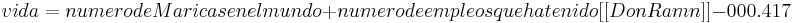

De: La Frikipedia, la enciclopedia extremadamente seria.
De: La Frikipedia, la enciclopedia extremadamente seria. De: La Frikipedia, la enciclopedia extremadamente seria.
Las Ardillas Huevonas Intergalácticas son una sociedad oculta en la parte más enferma y degradada por la sociedad de la calle Mt. Chupe (えぉおか) de Urano destinadas a comer su propio excremento y a tener nombres chistosos como Frozny o Merlin.
Los expertos afirman que estas hardillas estan desarrollando una maquina perversa, capaz de destruir 2 planetas y medio, y talvez un pequeño meteorito (no esta confirmado todavia),ésta máquina pesa 400.013,12 toneladas venusianas que vienen a ser unos dos kilos aqui,en fin;estas ardillas maricas quieren venir a la tierra a llevarse todas las escuadras de una pequeña parte de Alaska y asi destruir la infancia de nuestra parte más querida de EE.UU.
Al destruir todas las escuadras de Alaska, las ardillas lograrán el ideal de su lider, Santiago Arias, y harán que todos los pequeños y repulsivos esquimales se vuelvan cada vez mas y mas repulsivos, e idiotas, como los malditos Franceses o los Anglicanos, y terminarán destruyendose como los pequeños cara de pez que son. Si esto llegara a fallar, las Ardillas cuentan con el plan B, el cual es lanzar una lluvia de coca cola en las zonas mas pobres del mundo y volver a sus niños en criminales con sobrecarga de azúcar, un verdadero peligro ambiental.
Despues de este hecho, todas las ardillas vendrán hacia la tierra, excepto Jimmy, el cual esta castigado por comerse todo el pastel de cumpleaños, y poblarán la zona Alaskiana, en donde se comerán a los sobrevivientes y a las madres solteras, y acabarán con todo a su paso.
Estas Ardillas son en realidad muy pequeñas, miden extactamente lo mismo que sus homologas terrícolas, pero a diferencia de las terricolas, estas tienen una enorme cabeza, la cual no ha podido ser medida. Las Ardillas Huevonas Intergalacticas son primas lejanas de los Spiris, cuya raza esta siendo estudiada gracias al único ejemplar que ha sido capturado, David "Speedy" o "Spiri" González
Aunque usted no lo crea, estas paganos y consideran a su Líder Santiago Arias como un ser divino y digno de ofrecimientos, entre éstos están:
Gyura, el sacerdote mas viejo de la cultura, descubrió hace poco un nuevo sentido para la vida, su idea es fácilmente resumida en esta ecuacion

esto nos da el increible numero 41 42 que confirma la inteligencia de la raza humana, que lo habia descubierto mucho antes.
Esta idea fue expuesta por Gyura en la convencion de cartas de Pokémon en el año 2005.
Autor(es):